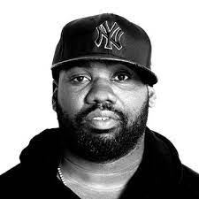

Raekwon, born Corey Woods, is another founding member of Wu-Tang Clan. Raekwon "The Chef" was celebrated for his simple, yet impactful style of rapping. After the booming success of Wu-Tang, Raekwon released his classic debut album Only Built 4 Cuban Linx…, which is considered one of the greatest and most iconic hip-hop albums of all time by many critics.
Though his subsequent albums were met with lukewarm reception, Raekwon in 2009 released his fourth album, Only Built 4 Cuban Linx… Pt. II. This successor to his debut album was a critical and commercial success, bringing Raekwon back to the forefront of the hip-hop scene. Raekwon ranked tenth among hottest rappers in 2009 according to MTV, and won HipHopDx’s album of the year in a spectacular return to form.